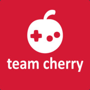

¿Quién lo creó?

Hollow Knight fue creado por la empresa desarrolladora Team Cherry, un estudio independiente con sede en Australia. El equipo de desarrollo estaba compuesto por tres personas: Ari Gibson, William Pellen y Jack Vine. El juego fue lanzado en 2017 y ha sido muy bien recibido por la crítica y los jugadores por su estilo artístico, su jugabilidad desafiante y su mundo intrigante.
Team Cherry es un desarrollador de juegos independiente en Adelaida, Australia del Sur. Nuestra misión es construir mundos locos y emocionantes para que puedas explorar y conquistar.